Мета та поставновка задачі
Тема: WEB-СЕРВЕРИ ТА ПРИНЦИПИ ЇХ РОБОТИ З КОРИСТУВАЧЕМ.
СЕРВЕРНІ WEB-ЗАСТОСУВАННЯ.
Мета: придбати практичні навички встановлення та конфігурування WEB-сервера, встановлення та налаштування Apache
ХІД ВИКОНАННЯ РОБОТИ
1. У звітному HTML-документі розмістити тему та постановку задачі лабораторної роботи №6.
2. Користуючись документацією бібліотеки https://jqueryui.com/ додати до сайту 3 динамічних елементи
на свій розсуд.
3. Вибрати емулятор WEB-сервера за власним бажанням.Створити WEB-вузол на комп’ютер.
4. На WEB-вузол завантажити всі HTML-документі. Звернулись до них з запитом для перегляду.
5. Перейменувати розширення .html на .php . Відкрити і з’ясувати, що інформація відображується
на екрані.
6. Ознайомитись с установкой и конфигурированием WEB-сервера.
7. Визначити для файлів вузла для файлов узла кодировку utf-8 у самих файлах (meta - charset), в
httpd.conf (apache), php.ini.
8. Перевірити корректність відображення інформації.
9. Для форми зворотнього зв’язку відобразити ( на відправку повідомлення) інформацію, что повідомлення
отримано. Також відобразити дату.
3 динамічні елементи
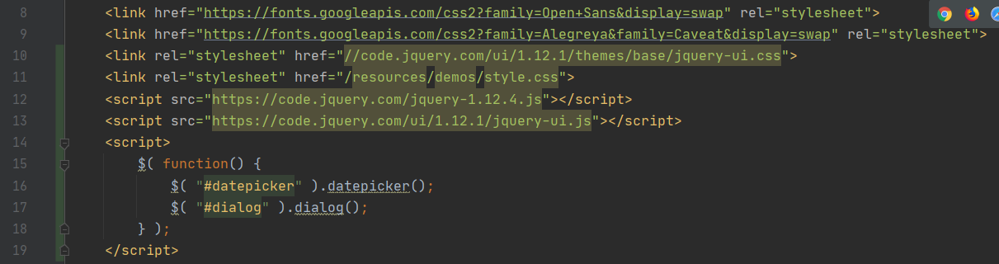
Dialog
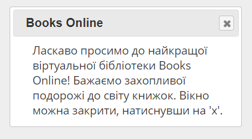Datepicker
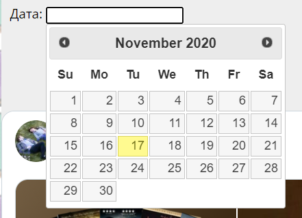Емулятор WEB-сервера MAMP
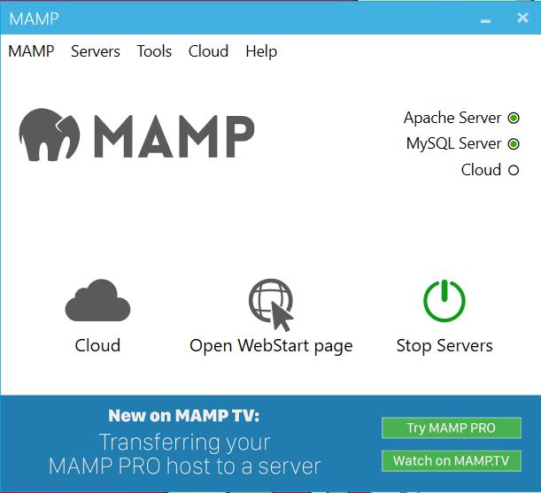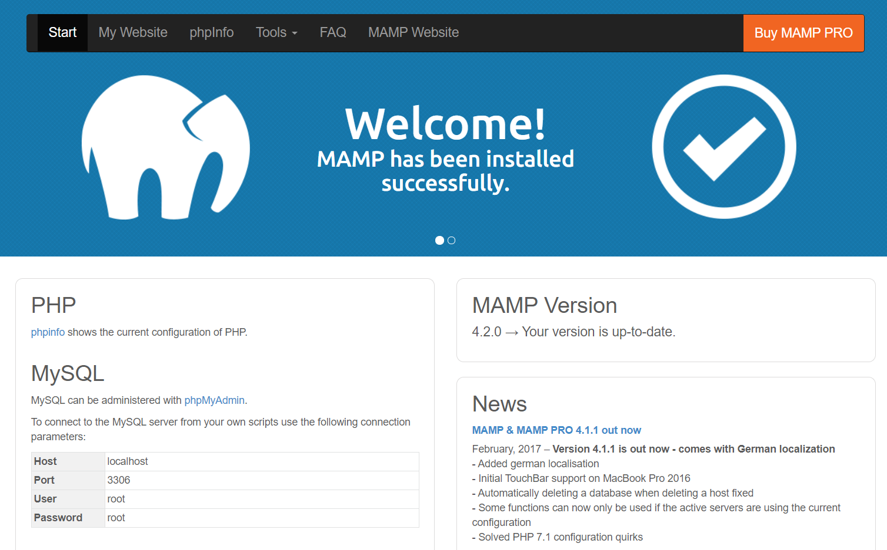
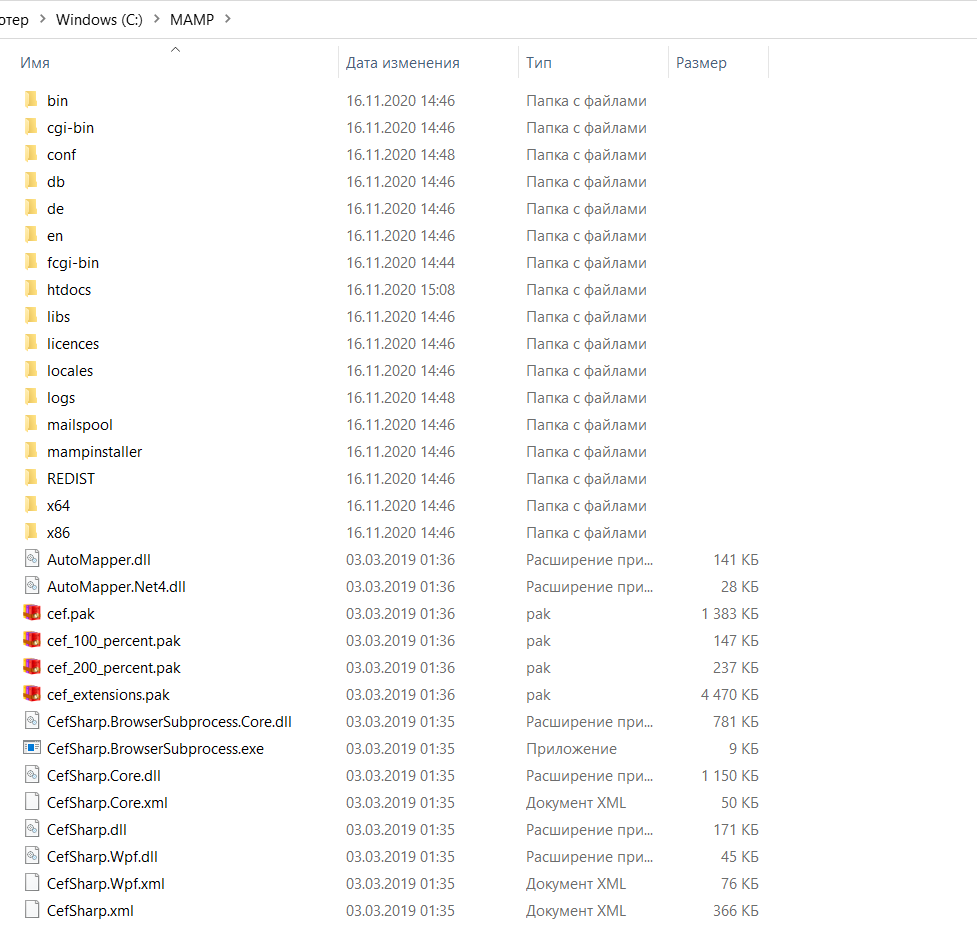
Застосування PHP
Метод $_GET
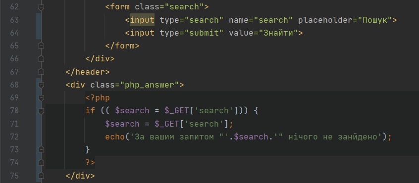
Метод $_POST
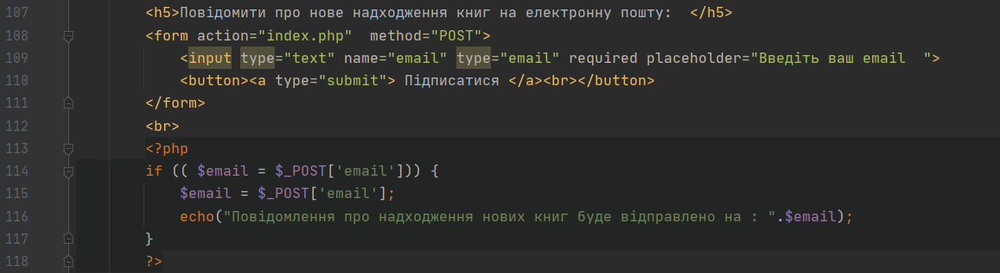
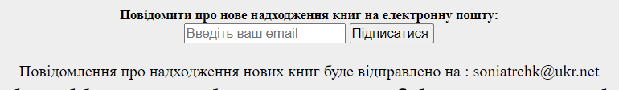
Відображення дати
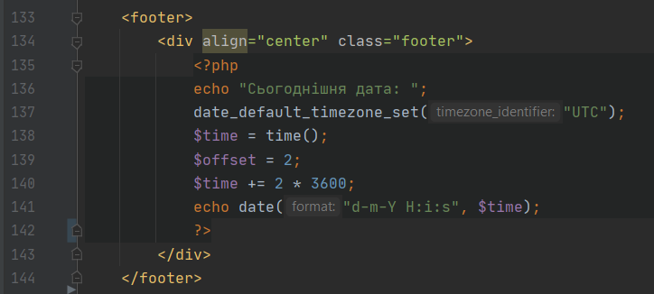
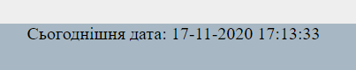
Висновок
На даній лабораторній ми навчилися працювати із локальним WEB-сервером, використовуючи емулятор MAMP для перевірки роботи коду, написаного на PHP, переглянули системні файли MAMP та додали динамічні елементи на свій сайт.